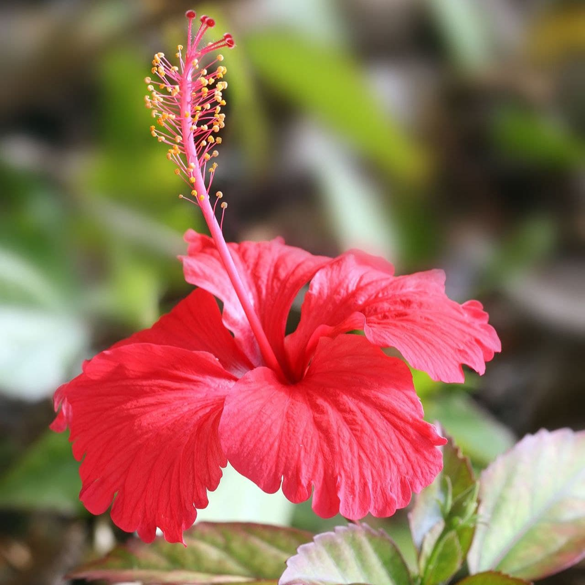
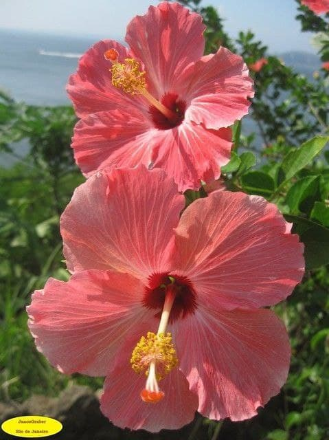
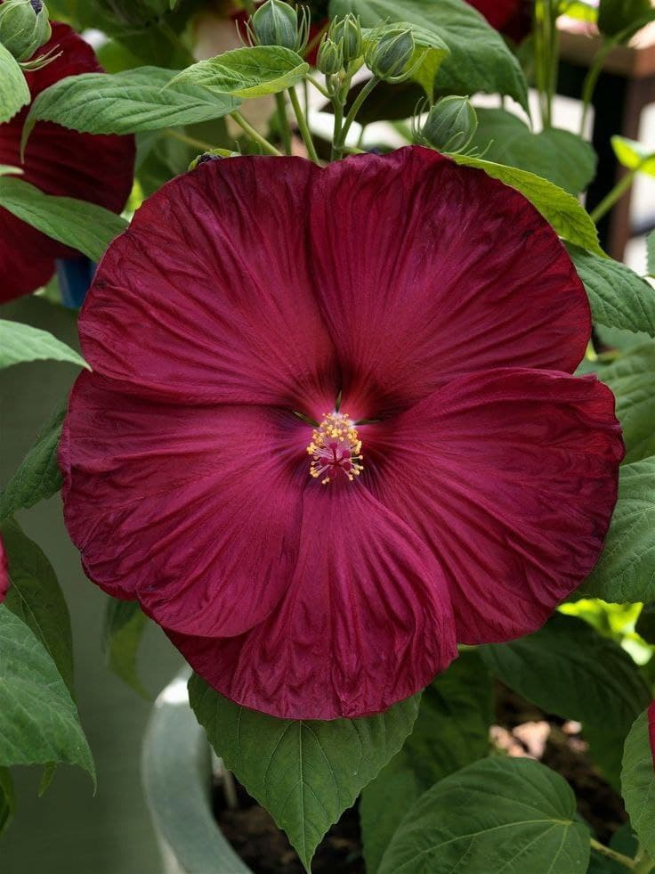
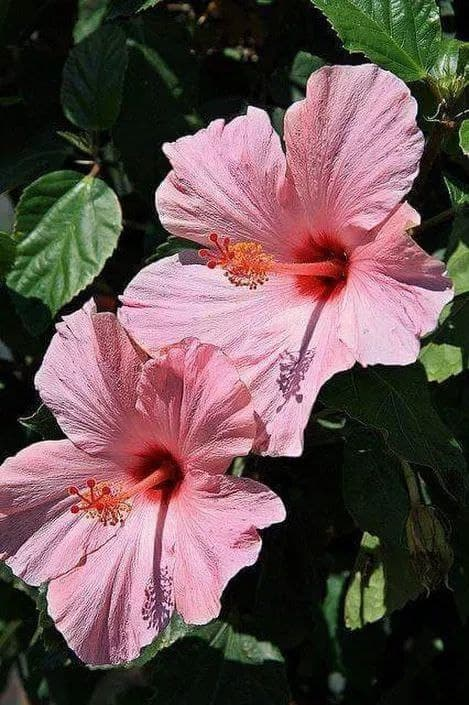
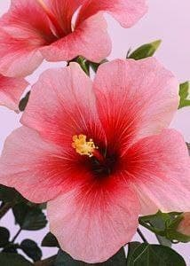
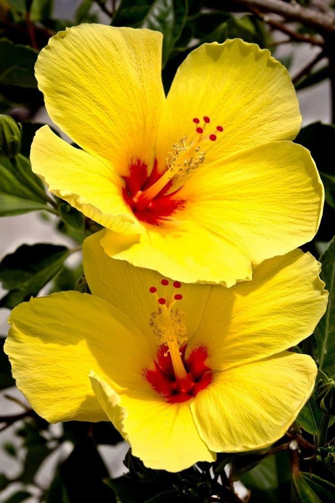

Planta
Planta
Planta

Hibiscus
     How to take care of it:
It focuses on organic fertilization at least twice a year,
aligns between successive blooming periods that are usually more frequent in the spring and early summer,
recommends increasing humidity in the summer and decreasing in the winter, succeeds in most land types,
and tolerates different climatic conditions better than other species